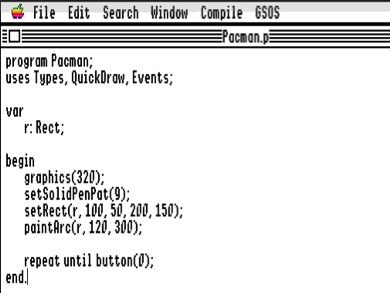

GS Programming

Please type in the following program, compile to memory, and what did you see? This is as easy as it can be!
program Pacman;
uses Types, QuickDraw, Events;
var r: Rect;
begin
graphics(320);
clearScreen(black);
setSolidPenPat(9);
setRect(r, 100, 50, 200, 150);
paintArc(r, 120, 300);
repeat until button(0);
end.

You should always start the program by graphics(320) for 320 mode or graphics(640) for 640 mode Super Hires.
The 320 mode has 320x200 resolution with 16 colors palette, while 640 mode has 640x200 resolution with 4 colors palette. Each screen can have a total of 16 palettes from the choice of 4096 colors.
You can then use different libraries in the Apple IIGS toolbox to perform different functions. In many cases, you will also need to use the Types library as those libraries are dependent on it.
Click here to see the a sample list of libraries and their commands in the Toolbox.
GSoft BASIC comparison:
HGR
HCOLOR= 9
DIM R AS RECT
SETRECT (R, 100, 50, 200, 150)
PAINTARC (R, 120, 300)
GET A$